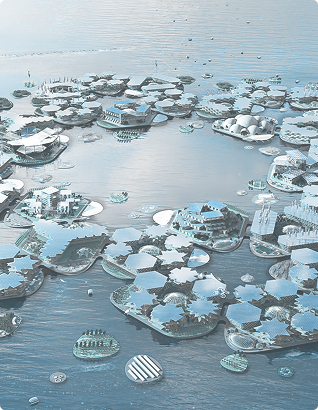

Architectonics
Collection d’Iris Van Herpen
Une coexistence harmonieuse entre l’humain et l’océan. Architecture, biologie et couture réunies en un seul écosystème.
Collection d’Iris Van Herpen

Chaque collection naît d’un questionnement scientifique, physique ou philosophique. Elle s’inspire des structures naturelles, des théories quantiques, des phénomènes invisibles.
Née le 5 juin 1984 aux Pays-Bas, Iris van Herpen grandit au contact de la nature et du silence. Très tôt fascinée par le mouvement, la forme et la matière, elle étudie la mode à l’Institut des Beaux-Arts d’Arnhem.
irisvanherpen.comLeur premier prototype, OCEANIX Busan, est présenté comme la première communauté flottante durable au monde, conçue pour accueillir jusqu’à 10 000 habitants dans un système intégré et autosuffisant.

Oceanix est un projet international qui conçoit et construit des villes flottantes durables, pensées pour permettre à l’humanité de vivre sur l’océan de manière résiliente et écologique. Selon leur site officiel, Oceanix développe des plateformes modulaires capables de créer de nouveaux espaces habitables pour les villes côtières, tout en s’adaptant à la montée du niveau des mers.
oceanix.com